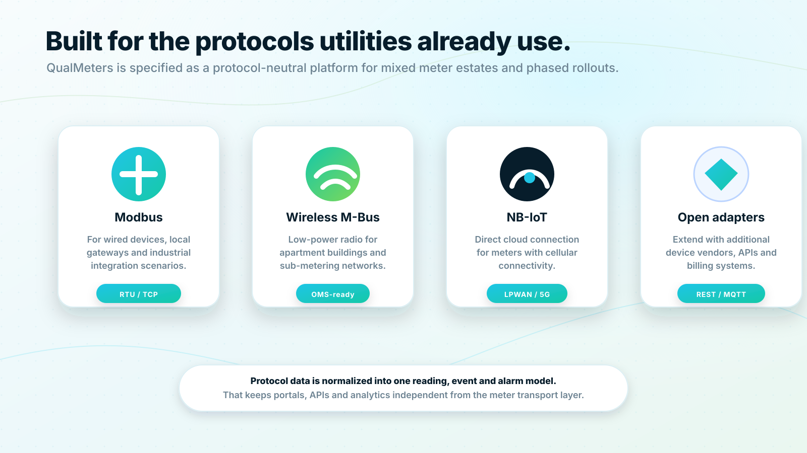

Connectivity
Built for the communication technologies already used in water metering.
Smart metering projects rarely start from a blank slate. QualMeters is designed as a protocol-neutral platform that can support Wireless M-Bus, Modbus, NB-IoT and future adapters while presenting one clean data model to users and integrations.

Connectivity
Wireless M-Bus
Wireless M-Bus is a natural choice for apartment-level sub-metering environments where many low-power meters need to be read within the same property. A building gateway can collect meter frames and forward data to the QualMeters platform.
Use Wireless M-Bus to collect apartment-level readings without opening every meter location manually. QualMeters converts radio meter data into usable readings, event states and device status for dashboards, resident portals and APIs.
Connectivity
Modbus
Modbus is widely used in building automation and industrial metering contexts. QualMeters can be specified to use Modbus through the building gateway for devices that require wired or local bus integration.
Connect compatible wired devices and local metering infrastructure through Modbus. QualMeters can normalize these readings into the same cloud data model used by wireless and NB-IoT meters.
Connectivity
NB-IoT
NB-IoT provides a direct cellular path for meters that are equipped with compatible modules. It is especially useful when a building gateway is not desired or when meters are spread across many locations.
Deploy NB-IoT meters where direct-to-cloud connectivity is the best operational model. Readings are transmitted to the QualMeters cloud and made available to authorized systems through dashboards, portals and APIs.
Connectivity
REST API
Connectivity does not stop at the meter. QualMeters also provides organization-grade access through REST APIs so water data can flow into billing systems, ERP environments, municipal platforms and analytics tools.
 Request a demo
Request a demo